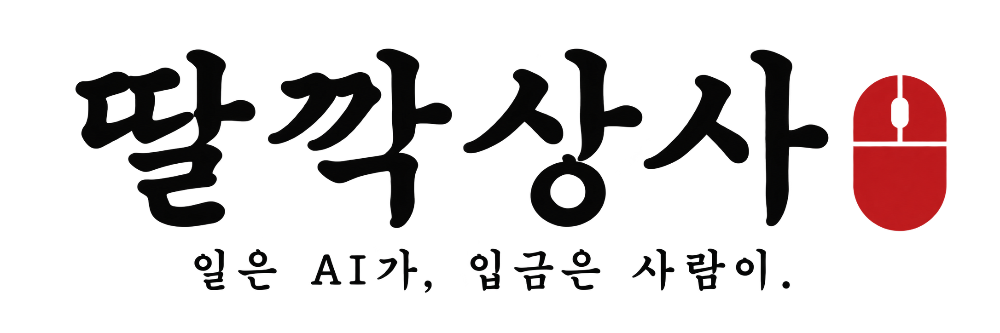
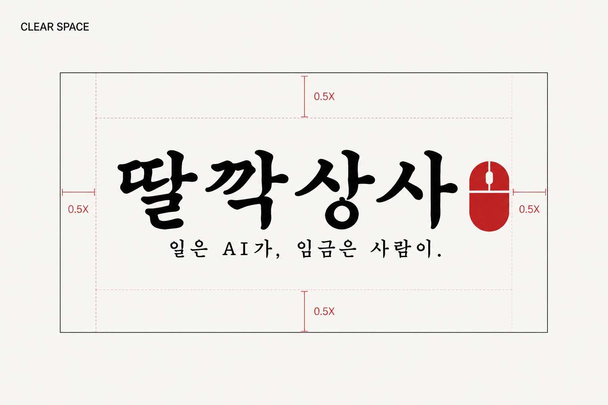
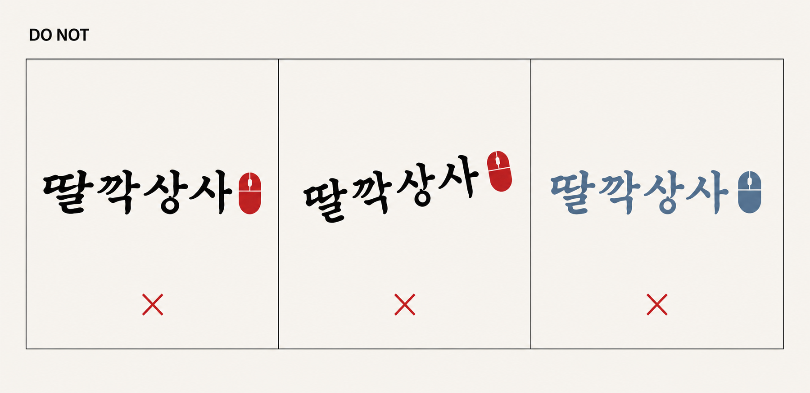

about
MAIN LOGO

SINGLE COLOR
VERTICAL VARIATION
AI CONTENT COMPANY / BUSAN
일은 AI가, 입금은 사람이.
딸깍상사는 기획서가 회의실을 떠돌다 늙어 죽기 전에, AI에게 일을 시키고 사람이 방향을 정하는 크리에이티브 컴퍼니입니다.
부산의 장소와 이야기를 콘텐츠와 서비스로 바꿉니다. 반복 업무는 기계에게, 최종 판단과 책임은 사람에게, 그리고 입금 확인은 누구보다 인간적으로 합니다.
- focus
- AI · 관광 · 콘텐츠
- base
- Busan, Korea
- principle
- human-directed AI
BI.02
core palette
BI.03
identity rules
어떤 매체에서도 같은 인상을 남기기 위한 최소 운용 기준입니다.


- 01원본 우선
메인 로고의 서체, 자간, 마우스 심벌 비율을 임의로 다시 그리거나 변형하지 않습니다.
- 02보호 공간
마우스 심벌 너비를 X로 삼아 로고 사방에 최소 0.5X의 여백을 확보합니다.
- 03형태 선택
메인형을 우선하고 좁은 면에는 승인된 세로형만 사용합니다.
- 04최소 크기
가독성을 위해 메인형은 화면 180px, 인쇄 35mm 이상을 권장합니다.